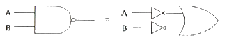
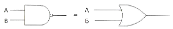
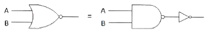
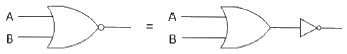
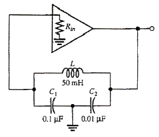
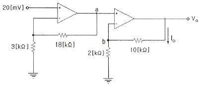
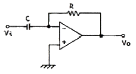
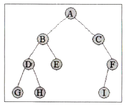

정보통신산업기사 (2012-10-06 기출문제)
1과목: 디지털전자회로
1. 다음의 논리회로도에서 드모르간(De-morgan)의 정리를 나타내는 것은 어느 것인가?




(정답률: 78%)

2. 일반적으로 카운터(counter)와 시프트 레지스터(shift register)의 차이점을 가장 잘 표현한 것은?
- 카운터에는 특정한 상태 순서가 있으나, 시프트 레지스터는 상태 순서가 없다.
- 카운터에는 특정한 상태 순서가 없으나, 시프트 레지스터는 상태 순서가 있다.
- 카운터와 시프트 레지스터는 데이터의 이동기능이 주된 목적이다.
- 카운터와 시프트 레지스터는 데이터의 저장기능이 주된 목적이다.
(정답률: 74%)
3. 다음 중 차동증폭기의 동상신호제거비 CMRR은? (단, Ac=동상전압이득, Ad=차동전압이득)
- 20 log (Ad/Ac)
- 10 log (Ad/Ac)
- 10 log (Ac/Ad)
- 20 log (Ac/Ad)
(정답률: 68%)
4. TTL(Transistor Transistor Logic) 회로의 특징이 아닌 것은?
- 집적도가 높다.
- 동작속도가 빠르다.
- 소비 전력이 비교적 적다.
- 온도의 영향을 적게 받는다.
(정답률: 83%)
5. 연산 논리 장치라 하며 CPU 내에서 모든 연산이 이루어지는 곳을 무엇이라고 하는가?
- LSI
- ALU
- Accumulator
- Flag Register
(정답률: 79%)
6. AM 변조에서 반송파 전력이 50[kW]일 때, 변조도 70[%]로 변조한다면 피변조파 전력 Pm은 몇 [kW]인가?
- 35.5
- 62.25
- 75.45
- 80.25
(정답률: 64%)
7. 다음은 콜피츠 발진회로이다. 발진주파수는 약 얼마인가?

- 5.64[kHz]
- 6.46[kHz]
- 7.46[kHz]
- 8.64[kHz]
(정답률: 58%)
8. 다음 중 클리퍼 회로의 설명으로 옳은 것은?
- 입력 파형을 주어진 기준전압 레벨 이상 또는 이하로 잘라내는 회로
- 일정한 레벨 내에서 신호를 고정시키는 회로
- 특정 시각에 발진 동작을 시키는 회로
- 안정 상태와 준안정 상태를 번갈아 동작하는 회로
(정답률: 90%)
9. 슈미트 트리거 회로에서 최대 루프 이득을 1이 되도록 조정하면 어떻게 되는가?
- 회로의 응답속도가 떨어진다.
- 장시간 높은 안정도를 얻는다.
- 스스로 Reset 할 수 있다.
- 아날로그 정현파가 발생한다.
(정답률: 66%)
10. 푸시풀(push-pull) 트랜지스터 전력증폭기에서 바이어스를 완전 B급으로 하지 않은 이유는 무엇인가?
- 효율을 높이기 위해서
- 출력을 크게 하기 위해서
- 큰 위상 변화를 얻기 위해서
- 크로스오버(Cross-over) 왜곡을 줄이기 위해서
(정답률: 84%)
11. 무부하일 때 출력이 50[V]인 직류전원장치가 있다. 1[kΩ] 부하저항을 연결했을 때 출력전압은 40[V]로 떨어졌다. 전압변동률은 백분율로 얼마인가?
- 10[%]
- 15[%]
- 20[%]
- 25[%]
(정답률: 60%)
12. 다음 중 정류기의 평활회로에 사용되지 않는 것은?
- 콘덴서
- 저항
- 쵸크코일
- 다이오드
(정답률: 74%)
13. 비교회로(Comparator)에 대한 설명 중 옳지 않은 것은?
- 2개의 입력을 비교하여 비교한 결과를 출력에 나타내는 회로이다.
- 출력의 종류는 3가지이다.
- 2개의 입력이 같은 값일 때 출력은 배타적 NOR(XNOR)로 표시된다.
- 2개의 입력이 다른 값일 때 출력은 배타적 OR(XOR)로 표시된다.
(정답률: 65%)
14. 다음 그림의 회로는 두 개의 비반전 증폭기를 종속 접속한 것이다. 저항 10[kΩ]에 흐르는 전류 ID는 몇 [μA]인가? (단, 각 연산 증폭기는 이상적이다.)

- 25[μA]
- 50[μA]
- 70[μA]
- 120[μA]
(정답률: 63%)
15. 정현파 발진기로서 부적합한 것은?
- CR 발진기
- 수정 발진기
- LC 발진기
- 멀티바이브레이터
(정답률: 78%)
16. 다음 그림은 어떤 회로인가?

- 미분기
- 적분기
- 가산기
- 검파기
(정답률: 83%)
17. 전파정류회로에서 실효값을 나타내는 식은?
- Vm / 2
- Vm / √2
- √Vm / 2
- 2 / Vm
(정답률: 75%)
18. 다음 중 PCM(펄스부호변조)의 설명으로 옳지 않은 것은?
- S/N비가 좋고 원거리통신에 유용하다.
- 신호파를 표본화시킨다.
- 고가의 여파기가 불필요하다.
- 표본화된 신호를 부호화한 다음에 양자화한다.
(정답률: 78%)
19. 동기식 순서 논리 회로를 바르게 설명한 것은 다음 중 어느 것인가?
- 여러 단의 순서 논리 회로가 한 개의 클록 신호를 공동 이용하여 동작하는 회로
- 여러 단의 순서 논리 회로가 전단의 출력 신호를 이용하는 회로
- 여러 단의 순서 논리 회로가 여러 개의 클록 신호를 이용하는 회로
- 여러 단의 순서 논리 회로가 클록과 출력 신호와는 무관하게 동작하는 회로
(정답률: 61%)
20. 다음 중 디코더에 대한 설명으로 올바른 것은?
- n비트의 2진 코드를 최대 n개의 서로 다른 정보로 교환하는 조합 논리회로이다.
- 디코더에 Enable 단자를 가지고 있을 때, 디멀티플레서로 사용한다.
- IC 7485는 디코더로서 기능을 사용할 수 있다.
- 상용 IC 74138은 디코더와 디멀티플렉서의 기능을 모두 사용할 수 없다.
(정답률: 63%)
2과목: 정보통신기기
21. 정보통신 데이터 처리기술의 일반적인 기능에 대한 설명으로 옳지 않은 것은?
- 데이터의 암호화
- 데이터의 통계화
- 통신망에서 발견되는 오류 발견 및 정정
- 전송 중인 데이터의 분실 발견 및 방지
(정답률: 59%)
22. 다음 중 위치정보와 무선통신망을 이용하여 교통안내, 긴급구난, 인터넷 등 Mobile Office를 제공하는 것은?
- Telematics
- RFID
- CDMA
- Voip
(정답률: 83%)
23. 인터넷 프로토콜(IP)을 이용한 VoIP 서비스의 구성요소가 아닌 것은?
- 프록시 서버(Proxy Server)
- 게이트웨어(Gateway)
- 게이트키퍼(Gate Keeper)
- 중앙제어장치(Central Controller)
(정답률: 79%)
24. 입력 장비가 3개인 동기식 TDM에서 각 프레임은 7개의 문자로 구성되어 있으며 프레임마다 동기를 위해서 2[bits]를 할당한다. 각 문자는 8[bits]이고, 각 입력단의 장비는 5,800[bps]로 보낸다고 할 때 다중화 된 후의 프레임 속도는?
- 100[frames/sec]
- 200[frames/sec]
- 300[frames/sec]
- 400[frames/sec]
(정답률: 84%)
25. 다음 중 페이딩(Fading)의 영향이 적으며, 통신의 보안을 유지하는데 우수한 다원접속 방식은 어느 것인가?
- 주파수분할다원접속방식(FDMA)
- 시분할다원접속방식(TDMA)
- 부호분할다원접속방식(CDMA)
- 공간분할다원접속방식(SDMA)
(정답률: 79%)
26. 얼마나 미약한 전자파까지 수신할 수 있는가의 능력을 표시하는 양으로서 종합이득과 내부잡음에 의해 결정되는 것은?
- 안정도
- 충실도
- 선택도
- 감도
(정답률: 76%)
27. 인공위성을 이용하여 위치, 속도 및 시간 측정을 가능하게 해주는 시스템은?
- GPS
- DMB
- VRS
- ARS
(정답률: 91%)
28. 다음 중 SDH(Synchronous Digital Hierarchy)에서 STM-1의 전송속도[Mbps]는?
- 155.52[Mbps]
- 139.26[Mbps]
- 62.08[Mbps]
- 50.84[Mbps]
(정답률: 77%)
29. 다음 중 집중화기의 구성요소가 아닌 것은?
- 중앙 처리 장치
- 다수 선로 제어기
- 단일 회선 제어기
- 신호 변환기
(정답률: 58%)
30. 서로 다른 프로토콜을 가진 네트워크를 연결하기 위해 사용되는 네트워크 장비는?
- 허브
- 리피터
- 라우터
- 게이트웨이
(정답률: 69%)
31. DTE와 DCE를 상호 연결하기 위해 기계적, 전기적, 기능적, 절차적인 조건들을 표준화한 것은?
- 토폴로지
- DCE 아키텍처
- DTE/DCE 인터페이스
- 참조 모형
(정답률: 89%)
32. 다음 중 지향성 안테나가 아닌 것은?
- 야기(Yagi) 안테나
- GP(Ground Plane) 안테나
- 루프(Loop) 안테나
- 파라볼라(Parabola) 안테나
(정답률: 65%)
33. 다음 중 위성통신에서 사용하는 다원접속방식에 해당되지 않는 것은?
- FDMA
- TDMA
- CDMA
- WDMA
(정답률: 77%)
34. N 위상 변조를 동기식 모뎀의 신호 속도가 M[baud/sec]인 경우 비트속도를 구하는 식은?
- M log2 N
- N log2 M
- M log10 N
- N log10 M
(정답률: 84%)
35. 비디오, 오디오, 데이터 등 모든 것을 디지털 처리한 후 전송하는 TV 방식이 아닌 것은?
- SDTV
- HDTV
- UHDTV
- 아날로그 TV
(정답률: 87%)
36. 델린저 현상(Dellinger Effect)을 가장 강하게 받는 주파수는?
- 장파
- 단파
- 초단파
- 극초단파
(정답률: 61%)
37. 다음 중 인터넷 서핑은 물론 다양한 멀티미디어의 이용이 가능한 TV는?
- 스마트 TV
- 케이블 TV
- 흑백 TV
- 칼라 TV
(정답률: 90%)
38. 다음 중 주파수분할다중화(FDM)기의 설명이 아닌 것은?
- 동기식 데이터 다중화에 사용된다.
- 1,200[bps] 이하에서 사용된다.
- 채널간 완충지역으로 가드밴드(Guard Band)를 주어야 한다.
- 별도의 모뎀이 필요 없다.
(정답률: 64%)
39. 다음 중 뉴미디어의 효과가 아닌 것은?
- 즉시성과 공평성
- 간편성과 수익성
- 개인화와 능동성
- 단일화와 단방향성
(정답률: 86%)
40. 다음은 CATV 방송의 특징을 설명하였다. 옳지 않은 것은?
- 동축, 광섬유, M/W로 구성되어 전송한다.
- 불특정 다수에게 방송을 전송한다.
- 전송망사업자(NO), 방송국운영자(SO), 프로그램공급자(PP) 3개 분야가 있다.
- 케이블 모뎀(Cable Modem)을 이용하여 양방향 통신이 가능하다.
(정답률: 83%)
3과목: 정보전송개론
41. UTP Category 5 케이블을 이용하여 100[Mbps] 속도를 지원하도록 구성하기 위한 사용되는 UTP 케이블의 페어(pair) 수는?
- 1
- 2
- 3
- 4
(정답률: 72%)
42. 인터넷 프로토콜을 대표하는 TCP/IP는 각각 OSI 7 Layer의 RM(Reference Model)에 대응시키면 어떤 Layer에 각각 해당되는가?
- L4/L3
- L7/L3
- L4/L2
- L4/L1
(정답률: 81%)
43. 다음 중 비트 동기 방식의 프로토콜이 아닌 것은?
- DDCMP
- HDLC
- LAP-B
- SDLC
(정답률: 72%)
44. T1 전송시스템에서 북미식 T1 전송시스템은 한 프레임당 125[μs] 시간동안 총 24채널을 다중화 한다. 이때 전송로 상의 전송속도는 얼마인가?
- 1.544[Mbps]
- 2.048[Mbps]
- 6.312[Mbps]
- 1.536[Mbps]
(정답률: 81%)
45. 다음 중 수신기에서 오류 검출뿐만 아니라 오류가 발생한 비트를 스스로 정정하는 방식은?
- 허프만 코드
- 해밍 코드
- Parity check
- Block check sum
(정답률: 84%)
46. IPv4에서 C클래스의 경우 IP주소 범위를 바르게 나타낸 것은?
- 0.0.0.0 ~ 127.255.255.255
- 128.0.0.0 ~ 191.255.255.255
- 192.0.0.0 ~ 223.255.255.255
- 224.0.0.0 ~ 239.255.255.255
(정답률: 86%)
47. 수신측에서 데이터를 수신한 뒤 수신데이터에 오류가 없음을 송신측에 알린 후 그 다음 데이터에 대한 송신이 이루어지는 방식은 무엇인가?
- Stop-and Wait ARQ
- Selective ARQ
- Go-back N ARQ
- Adaptive ARQ
(정답률: 68%)
48. 현재 우리나라 FM 방송에 사용되는 주파수대는?
- 중파 : 0.3 ~ 3[MHz]
- 단파 : 3 ~ 30[MHz]
- 초단파 : 30 ~ 300[MHz]
- 극초단파 : 0.3 ~ 3[GHz]
(정답률: 82%)
49. 다음 보기 중 나이퀴스트(Nyquist) 표본화 주기는 어느 것인가?
- Ts ≤ 1/2fm
- Ts = 1/2fm
- Ts ≥ 1/2fm
- Ts ＞ 1/2fm
(정답률: 71%)
50. 다음 중 문자동기 방식의 설명으로 적합한 것은?
- 프레임 동기를 맞추기 위해 STX-ETX 문자를 사용한다.
- 수신측이 동기를 유지하도록 송신측은 시작 플래그 이전에 휴지(idle) 바이트(01111111)를 계속 전송한다.
- 비트블록(프레임)의 처음과 끝을 나타내는 특별한 비트패턴을 덧붙여 전송한다.
- 프레임의 중간에 플래그와 같은 비트패턴이 존재하면, 여분의 비트를 끼우는 방법(Bit Stuffing)이 사용된다.
(정답률: 75%)
51. 문자 동기 전송방식에서 SYN 문자의 기능은?
- 수신측이 문자 동기를 맞추도록 한다.
- 블록의 완료를 표시한다.
- 헤딩의 시작을 표시한다.
- 질의가 끝났음을 알린다.
(정답률: 88%)
52. 이동통신에서 MTSO(Mobile Telephone Switching Office)가 셀룰러의 위치를 탐색하는 것을 무엇이라고 하는가?
- 핸드오프
- 핸드온
- 페이징
- 수신
(정답률: 79%)
53. 초고속 인터넷 VDSL에 적용되는 변조방식에 해당되지 않는 것은?
- CAP
- DMT
- SLC
- PSK
(정답률: 67%)
54. 정보통신시스템에서 데이터 송신단과 수신단을 연결하는 것을 무엇이라 하는가?
- 네트워크
- 노드
- 트리
- 링크
(정답률: 64%)
55. 광케이블을 가입자 댁내까지 연결하여 안정된 인터넷 서비스를 제공하는 방식은?
- FTTF
- FTTH
- FTTO
- FTTC
(정답률: 87%)
56. 다음은 다이코드(dicode) 전송부호에 대한 설명이다. 틀린 것은?
- 0에서 0으로 변화가 없을 때는 0 전위
- 1에서 1로 변화가 없을 때는 (-)전위
- 0에서 1로 변화가 있을 때는 (+)전위
- 1에서 0으로 변화가 있을 때는 (-)전위
(정답률: 85%)
57. 채널대역폭이 3[kHz], S/N비가 20[dB]일 때 채널용량은 다음 중 어느 것인가? (문제 오류로 실제 시험에서는 모두 정답처리 되었습니다. 여기서는 1번을 누르면 정답 처리 됩니다.)
- 3,320[bps]
- 4,840[bps]
- 6,640[bps]
- 13,176[bps]
(정답률: 67%)
58. 직교주파수 분할 다중방식(OFDM)의 응용에서 디지털방송 분야에 해당되는 것은?
- DMB
- W-LAN
- WiBro
- WiFi
(정답률: 85%)
59. 광섬유 케이블에서 발생하는 접속 손실의 원인이 아닌 것은?
- 광섬유 심선 접속 부위의 간격
- 광섬유 심선 단면의 경사
- 광섬유 Core의 직격 및 모양의 상이
- 관로의 재질과 모양
(정답률: 84%)
60. 다음의 변조방식 중 전송과정에서 에러발생 가능성(Error Probability)이 가장 낮은 것은?
- ASK
- FSK
- QAM
- PSK
(정답률: 87%)
4과목: 전자계산기일반 및 정보설비기준
61. 다음 중 디스크에 있는 대량의 데이터를 복사 혹은 이동시킬 때에 CPU를 거치지 않고 직접 처리하는 방식은?
- 인터럽트(Interrupt)
- DMA(Direct Memory Access)
- 캐싱(Caching)
- 스풀링(Spooling)
(정답률: 81%)
62. 2진수 1001에 대한 1의 보수와 2의 보수의 표현으로 옳은 것은?
- 1101, 0110
- 0110, 0111
- 0111, 1110
- 0101, 0111
(정답률: 84%)
63. 부동소수점 연산에서 정규화를 하는 주된 이유는 무엇인가?
- 유효 숫자를 늘리기 위해서이다.
- 연산 속도를 증가시키기 위해서이다.
- 숫자 표시를 간단히 하기 위해서이다.
- 보다 큰 숫자를 표시하기 위해서이다.
(정답률: 64%)
64. 버스 마스터(Bus Master)에 관한 설명 중 맞는 것은?
- 독자적인 데이터 전송을 위해 직접적으로 버스 요청 신호를 생성할 수 있는 기능장치
- 버스에 대한 요청 권한이 없는 수동적인 기능장치
- 버스 사용권자를 결정하게 하는 하드웨어 장치
- 버스 허가, 버스 요청 및 버스 사용중 등 3개의 제어신호를 이용하는 장치
(정답률: 60%)
65. CPU가 실행하여야 할 명령어의 수가 75개인 경우 명령어 구분을 위한 명령코드(op-code)는 최소한 몇 비트가 필요한가?
- 5비트
- 6비트
- 7비트
- 8비트
(정답률: 87%)
66. 스래싱 현상이 발생했을 때 해결방법으로 틀린 것은?
- 부족한 자원을 증설한다.
- 일부 프로세스들을 중단한다.
- 모든 프로세스들을 중단한다.
- 다중 프로그래밍의 정도를 높여준다.
(정답률: 54%)
67. 다음 그림과 같은 트리를 Pre-Order로 운영할 때, 5번째 방문하는 트리는?

- A
- B
- D
- H
(정답률: 83%)
68. 임베디드 보드의 롬(ROM)에 저장되어 하드웨어를 제어하기 위해 작성된 프로그램을 무엇이라고 하는가?
- 스파이웨어(spyware)
- 프리웨어(freeware)
- 펌웨어(firmware)
- 멀웨어(malware)
(정답률: 87%)
69. 다음은 프로그램에 대한 설명이다. 틀린 것은?
- Supervisor Program : 처리 프로그램의 중추적인 역할로, 제어 프로그램의 실행과정과 시스템 전체의 동작 상태를 감시하는 역할을 한다.
- Job Management Program : 작업의 연속적인 진행을 위한 준비와 처리 기능을 수행하다.
- Data Management Program : 파일의 조작, 처리, 자료 전송, 데이터의 표준을 처리한다.
- Problem Processing Program : 사용자가 업무적인 필요에 의해서 작성한다.
(정답률: 58%)
70. 데이터의 특정 비트를 추가하거나 두개 이상의 데이터를 결합하는데 편리한 연산자는 무엇인가?
- Rotate
- Complement
- MOVE
- OR
(정답률: 74%)
71. 기간통신사업자가 국선을 몇 회선 이상으로 인입하는 경우에 케이블로 국선수용단자반에 접속ㆍ수용하여야 하는가?
- 2[회선]
- 3[회선]
- 5[회선]
- 10[회선]
(정답률: 79%)
72. 사업자의 교환설비로부터 이용자방송통신설비의 최초 단자에 이르기까지의 사이에 구성되는 회선을 무엇이라 하는가?
- 내선
- 국선
- 통신선
- 중계선
(정답률: 82%)
73. 방송통신서비스에 사용되는 방송통신설비가 갖추어야 할 안전성 및 신뢰성에 대한 세부기술기준은 누가(어디서) 정하여 고시하는가?
- 방송통신위원회
- 한국통신
- 한국정보통신기술협회
- 방송통신사업자
(정답률: 67%)
74. 다음 중 방송통신의 원활한 발전을 위하여 새로운 방송통신 방식을 채택할 수 있는 기관은?(관련 규정 개정전 문제로 여기서는 기존 정답인 1번을 누르면 정답 처리됩니다. 자세한 내용은 해설을 참고하세요.)
- 방송통신위원회
- 문화관광부
- 방송통신기술위원회
- 방송통신정책위원회
(정답률: 72%)
75. 다음 중 방송통신위원회의 허가를 받아야 하는 사업자는?
- 기간통신사업자
- 별정통신사업자
- 부가통신사업자
- 정보통신공사업자
(정답률: 55%)
76. 통신ㆍ방송ㆍ인터넷이 융합된 멀티미디어 서비스를 언제 어디서나 고속ㆍ대용량으로 이용할 수 있는 정보통신망을 무엇이라 하는가?
- 초고속 정보통신망
- 초고속 국가정보망
- 광대역 국가정보망
- 광대역 통합정보통신망
(정답률: 85%)
77. 다음 중 해당공사의 총 공사금액이 70억원 이상 100억원 미만인 경우 감리원의 배치기준으로 가장 적합한 것은?
- 특급감리원
- 고급감리원
- 중급감리원
- 초급감리원
(정답률: 83%)
78. 발주자로부터 공사를 도급받은 공사업자를 무엇이라 하는가?
- 수급인
- 하수급인
- 용역업자
- 감리업자
(정답률: 53%)
79. 공사에 관한 계획서ㆍ설계도면ㆍ시방서ㆍ공사비명세서ㆍ기술계산서 및 이와 관련된 서류를 작성하는 행위를 무엇이라 하는가? (다만, 건축사법의 규정에 의한 건축 등의 공사는 제외한다.)
- 감리
- 설계
- 용역
- 공사
(정답률: 87%)
80. 다음 중 감리원의 업무범위에 속하지 않는 것은?
- 공사일보 작성 및 진도보고
- 공사 진척 부분에 대한 조사 및 검사
- 공사업자가 작성한 시공 상세도면 확인
- 설계변경에 관한 사항의 검토확인
(정답률: 71%)
드모르간의 정리는 AND와 OR 연산자를 서로 바꾸고 모든 입력값을 반전시키는 것이다. 이 논리회로도에서는 AND와 OR 연산자가 각각 반전되어 있으므로 드모르간의 정리를 적용하면 OR 연산자를 AND로, AND 연산자를 OR로 바꾸고 모든 입력값을 반전시켜야 한다. 따라서 ""이 드모르간의 정리를 나타낸다.